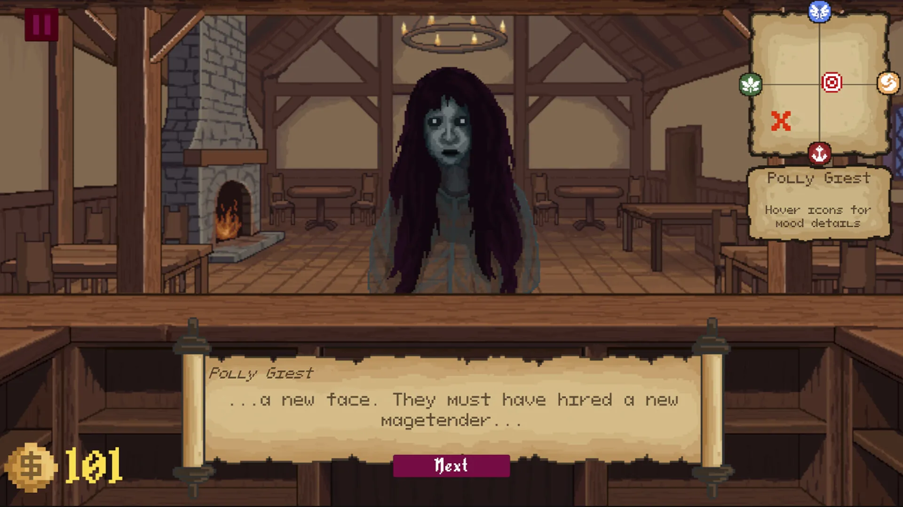
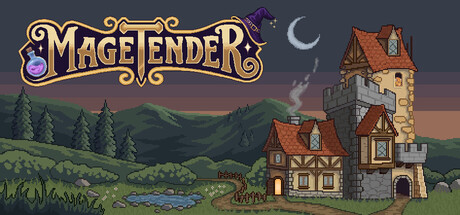
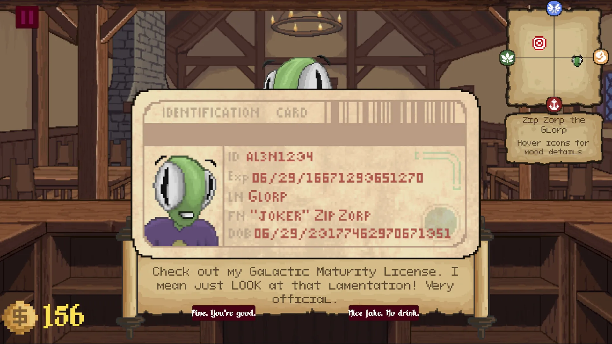
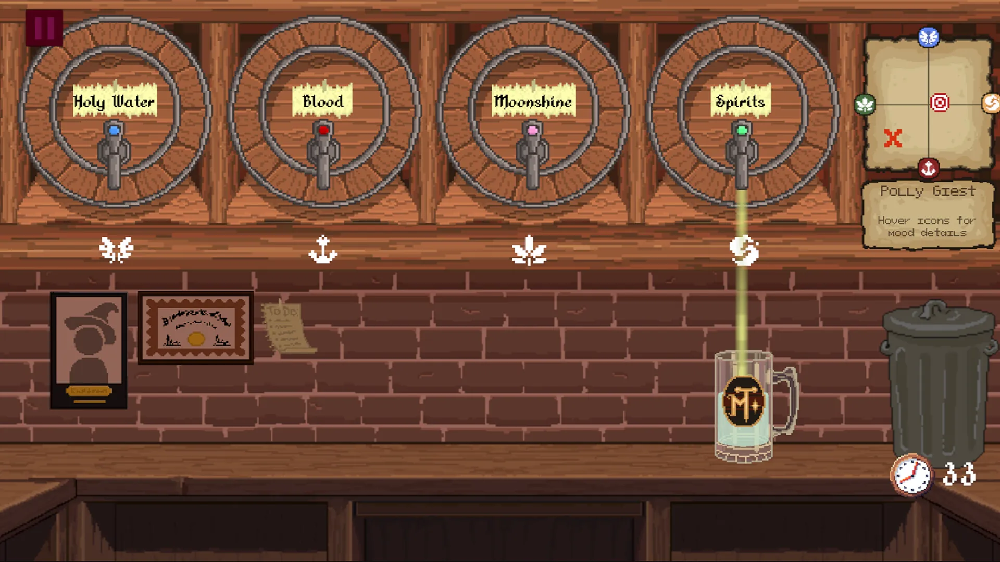
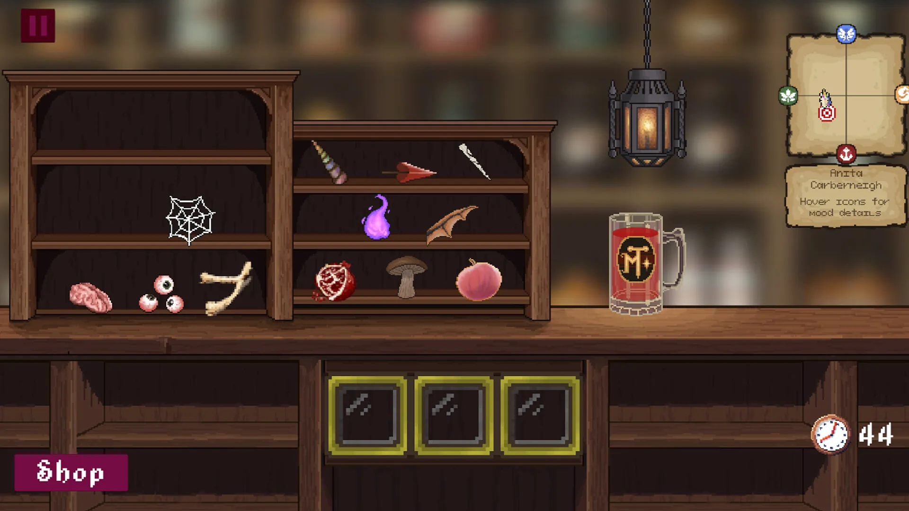
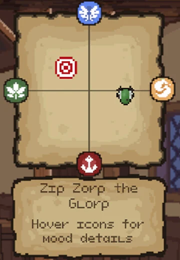

Magetender Game design, Team TAAAZED
Mix the right drink, or defend the bar
Overview
Magetender is a 2D fantasy game about a wizard-school dropout running a bar — mixing magical drinks to match a customer's mood, then defending the bar with a quick-time spell system when an order goes badly. I built it over six months with an interdisciplinary team, Team TAAAZED, designing the combat manager and Shader Graph-based UI, and owning every accessibility feature end to end: full controller support with a custom virtual-mouse system, colorblind-accessible UI, Spanish and Arabic localization, one-handed and touch-friendly controls, and sound accessibility.

Team & timeline
Magetender was a six month project built by an interdisciplinary team, Team T.A.A.A.Z.E.D, plus a handful of outside artists and writers who helped with art and dialogue.
- Ala’addin GhoshehEngine Lead
- David Guerrero-PantojaProduction Lead
- Eder YepezTools Lead, combat & music
- Zosia TrelaMarketing Lead
- Tyvin TandyAudio Design
We ran it in three stretches.
Ideation and design
Prototyping, a proof of concept level with three monsters, and the first rounds of playtesting.
The initial launch push
Building out a tutorial and five levels, launching the Steam page, and starting social media.
Polish and deferred features
Polish, and the features we’d put off to make that launch.
How the core loop works
Every customer walks in with a starting mood and a mood they want to leave with, plotted across four axes: calm, elevated, grounded, and dissociative.
You talk to them, pick a glass size, choose a base liquid, then layer in solid ingredients, each choice nudges the drink’s effect somewhere on that same graph. Serve it close enough to what they wanted and they’re happy. Miss badly enough and they come over the bar at you, which is where the fight mechanic I built takes over: a quick-time event where you’re reading and pressing attack and defense prompts to come out on top.
This is the system from our first vertical slice. The finished game kept this core loop but moved on to its own cast, art, and content from here.



“X marks the spot.”
What playtesting actually told us
We ran an in-person playtest with four players after our first real UI pass, then sat down as a team afterward to figure out what to do about it. A few of the findings landed on my side of the game specifically, the rest reshaped the UI as a whole.
The mood graph’s “X” didn’t read
“X marks the spot,” one player said when we asked what the marker meant. Another thought the X and the drink’s target were the same thing: “they mean the same thing.” Two different playtesters reading one marker as pointing at two different things told us this was a graph problem, not a tutorial problem.
What changed: we dropped the X for small renders of the actual character heads at their current position, so position and identity read in one glance instead of needing a legend.

Nobody saw the timer
“Didn’t see timer the first time,” one tester wrote, and that wasn’t unique to them, the tutorial never mentioned the timer existed at all, so nobody had a reason to look for it until they’d already lost time to it. One tester assumed it only applied to the pour step and ran out of time on the drink as a whole.
What changed: we made the timer bigger, moved it to the top right, added a line about it to the tutorial, and talked about adding a cue for when it’s running low.
Controls that made sense to us didn’t make sense cold
Several players didn’t know Space swapped between heal and attack. One said “W makes me think of west instead of up for some reason,” and more than one wanted to rebind keys without backing all the way out to the main menu.
What changed: keybind remapping moved into the pause menu, and the swap prompt got more visible and stayed on screen longer during a fight.
Combat balance, the part that was mine
Early fights tested too easy, “didn’t need to heal much,” but a specific late fight dragged because the enemy AI could spam healing, and one tester noted that falling behind early in a fight made a comeback feel out of reach. That’s a pacing and balance problem in the combat manager, which is what I actually owned, so this feedback went straight into the next pass I made on it. A couple of testers also suggested borrowing timing based inputs, the kind Papa’s Pizzeria uses for its mixing step, for brewing under pressure, an idea we were still weighing rather than something we’d committed to.
Almost everything that round of feedback touched was UI and UX, not content or scope.
That was useful to hear plainly: the next sprint’s job was tightening the visual language around mood and time pressure before we added anything new on top of it.